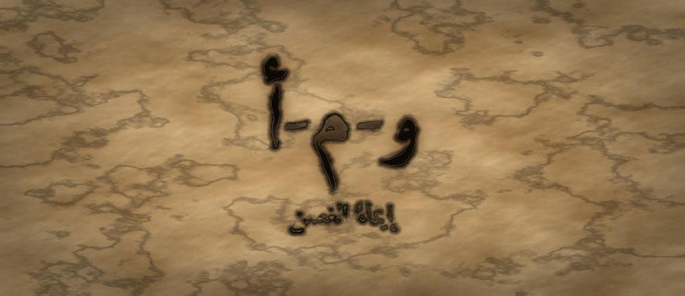

مَطبعةُ جُذور · دبي · MCMXXVI · سِلْسِلَةُ فَنِّ البَيان

مَرحلةُ الغُصْن · الفئة ١٠–١٢ · الجذر و-م-أ · الجاحظ
❦ ✦ ❧
السِّفْرُ ٩ — إيماءُ الغصن
«جَسَدِي يَتَكَلَّمُ قَبْلَ لِسَانِي — فَلْيَقُلْ مَا أَقْصِدُهُ»

الرِّسَالَةُ الجَوْهَرِيَّة
قَبْلَ أَنْ يَخْرُجَ الصَّوْتُ، يَكُونُ الْجَسَدُ قَدْ قَالَ رَأْيَهُ: الْيَدُ، وَالْكَتِفُ، وَاتِّجَاهُ الْوَجْهِ، وَالْمَسَافَةُ. يَتَعَلَّمُ الْمُتَعَلِّمُ هُنَا أَنَّ الْإِيمَاءَةَ لَيْسَتْ زَائِدَةً عَلَى الْكَلَامِ بَلْ جُزْءٌ مِنْهُ، وَأَنَّ اتِّفَاقَ الْجَسَدِ مَعَ اللِّسَانِ هُوَ مَا يُسَمِّيهِ النَّاسُ صِدْقًا.
بِطَاقَةُ هُوِيَّةِ السِّفْر
| الْمُسْتَوَى / الدَّرَجَة | غُصْنٌ يُشِيرُ — الدَّرَجَةُ الثَّانِيَةُ فِي مَرْحَلَةِ الْغُصْنِ |
| الْفِئَةُ الْعُمْرِيَّة | ١٠–١٢ سَنَةً · نِطَاقُ تَدَاخُلٍ يَمْتَدُّ إِلَى ١٣ لِمَنْ يُتْقِنُ الصَّوْتَ وَيَتَأَخَّرُ فِي الْجَسَدِ |
| الْجَذْرُ الْأَسَاسِيّ | و – م – أ · الْإِيمَاءُ: أَنْ يَقُولَ الْجَسَدُ مَا لَمْ يَقُلْهُ اللِّسَانُ بَعْدُ |
| أُسْرَةُ الْجَذْر | وَمْأَة · أَوْمَأَ · إِيمَاء · يُومِئُ · مُومِئ · إِيمَاءَة |
| الْمَحَطَّة | الْإِيمَاءُ — الرِّسَالَةُ الَّتِي تَسْبِقُ الْكَلَامَ وَتُصَاحِبُهُ |
| الْمِرْسَاةُ الْحِسِّيَّة | الْمُثَلَّثُ الثَّابِتُ: قَدَمَانِ مُسْتَقِرَّتَانِ، كَتِفَانِ مَفْتُوحَانِ، كَفَّانِ مَرْئِيَّتَانِ |
| الِاسْتِعَارَة | الْغُصْنُ الَّذِي تَعَلَّمَ النَّغَمَ، يَكْتَشِفُ أَنَّ مَيْلَهُ وَاتِّجَاهَ وَرَقِهِ يَقُولَانِ شَيْئًا لِمَنْ يَنْظُرُ |
| الشَّخْصِيَّتَانِ الْحَكِيمَتَان | الْجَاحِظُ (صَاحِبُ الْبَيَانِ وَالتَّبْيِينِ) + الْجَدَّةُ رَمْلَة |
| الشَّخْصِيَّةُ الرَّمْزِيَّة | نُورُ الْغُصْنِ (نَفْسُهَا مِنَ الْأَسْفَارِ السَّابِقَةِ — تَنْمُو) |
| الشَّخْصِيَّةُ الْمُضَادَّة | الظِّلُّ الْمُشَوَّشُ — رَمْزِيٌّ لَا تَارِيخِيٌّ، يَتَحَرَّكُ فِي اتِّجَاهٍ وَيَقُولُ اتِّجَاهًا آخَرَ، ثُمَّ يَتَعَلَّمُ الِاتِّسَاقَ |
| مُؤَشِّرُ الرَّصْدِ الْوَصْفِيّ | يُلَاحَظُ أَنَّهُ يُوَجِّهُ جَسَدَهُ نَحْوَ مُحَدِّثِهِ وَيَجْعَلُ إِشَارَتَهُ مُوَافِقَةً لِكَلَامِهِ |
| الْمَجَالُ الْمَهَارِيّ | إِدَارَةُ الذَّاتِ وَالتَّعْبِيرُ — اتِّسَاقُ الرِّسَالَةِ الْجَسَدِيَّةِ وَاللَّفْظِيَّةِ |
| الْمَرْجِعُ النَّظَرِيّ | اسْتِرْشَادًا بِـ TRT — نَظَرِيَّةِ الْقِرَاءَةِ الْمَلْمُوسَةِ (لَا ادِّعَاءَ اعْتِمَادٍ) |
صَاحِبُ السِّفْرِ مِنَ التُّرَاث
أَبُو عُثْمَانَ عَمْرُو بْنُ بَحْرٍ الْجَاحِظُ (ت ٢٥٥هـ) أَدِيبٌ بَصْرِيٌّ مِنْ أَعْظَمِ كُتَّابِ النَّثْرِ الْعَرَبِيِّ، صَاحِبُ «الْبَيَانِ وَالتَّبْيِينِ» وَ«الْحَيَوَانِ». عَدَّ فِي «الْبَيَانِ وَالتَّبْيِينِ» الْإِشَارَةَ وَالْخَطَّ وَالْعَقْدَ وَالنِّصْبَةَ مِنْ وُجُوهِ الْبَيَانِ إِلَى جَانِبِ اللَّفْظِ. نَسْتَلْهِمُ مِنْهُ هُنَا: أَنَّ الْبَيَانَ أَوْسَعُ مِنَ اللِّسَانِ، وَأَنَّ الْإِشَارَةَ لُغَةٌ قَائِمَةٌ بِذَاتِهَا.
الشَّخْصِيَّةُ المُضَادَّة — الظِّلُّ الْمُشَوَّشُ — شَخْصِيَّةٌ رَمْزِيَّةٌ لَا تَارِيخِيَّةٌ، يَمْتَدُّ نَحْوَ الشَّرْقِ وَيَقُولُ إِنَّهُ ذَاهِبٌ غَرْبًا، فَيَحَارُ مَنْ يَتْبَعُهُ. يَظُنُّ أَنَّ الْكَلَامَ وَحْدَهُ هُوَ الرِّسَالَةُ، ثُمَّ يَتَعَلَّمُ أَنَّ النَّاسَ يُصَدِّقُونَ اتِّجَاهَهُ لَا عِبَارَتَهُ، فَيُوَحِّدُ الِاثْنَيْنِ.
الجَذْرُ وَأُسْرَتُه
و-م-أ — وَمْأَة · أَوْمَأَ · إِيمَاء · يُومِئُ · مُومِئ · إِيمَاءَة
الْجَذْرُ (و-م-أ) مِثَالٌ وَاوِيٌّ مَهْمُوزُ اللَّامِ، وَفِعْلُهُ الْمَشْهُورُ رُبَاعِيٌّ: «أَوْمَأَ يُومِئُ إِيمَاءً» عَلَى وَزْنِ أَفْعَلَ يُفْعِلُ إِفْعَالًا. وَقُلِبَتِ الْوَاوُ يَاءً فِي «يُومِئُ» وَ«إِيمَاء» لِوُقُوعِهَا سَاكِنَةً بَعْدَ كَسْرَةٍ فِي الْمَصْدَرِ وَبَعْدَ ضَمَّةٍ فِي الْمُضَارِعِ — وَهَذَا يُذْكَرُ لِلْمُعَلِّمِ لِضَبْطِ الْكِتَابَةِ لَا لِتَحْمِيلِ الْمُتَعَلِّمِ.
القِصَّةُ الكَامِلَة
الْمَشْهَدُ ١ — كَلَامٌ صَحِيحٌ وَجَسَدٌ يُنَاقِضُهُ
وَقَفَتْ نُورُ أَمَامَ حَلْقَةٍ مِنَ الْأَغْصَانِ لِتَقُولَ رَأْيَهَا فِي مَكَانِ الْبِئْرِ الْجَدِيدَةِ. كَانَتْ قَدْ حَضَّرَتْ كَلَامَهَا جَيِّدًا، وَرَتَّبَتْهُ كَحِكَايَةٍ، وَضَبَطَتْ نَغْمَتَهُ كَمَا تَعَلَّمَتْ. قَالَتْ: «أَنَا وَاثِقَةٌ أَنَّ الْمَكَانَ الْأَفْضَلَ هُوَ جِهَةُ الشَّرْقِ.» لَكِنَّ كَتِفَيْهَا كَانَا مَطْوِيَّيْنِ إِلَى الدَّاخِلِ، وَعَيْنَيْهَا فِي الْأَرْضِ، وَيَدَاهَا مَخْبُوءَتَيْنِ خَلْفَ ظَهْرِهَا، وَقَدَمَاهَا تَتَحَرَّكَانِ كَأَنَّهُمَا تُرِيدَانِ الْهَرَبَ. صَمَتَتِ الْحَلْقَةُ، ثُمَّ قَالَ أَحَدُهُمْ بِلُطْفٍ: «يَبْدُو أَنَّكِ لَسْتِ مُتَأَكِّدَةً.» تَعَجَّبَتْ نُورُ: «لَكِنِّي قُلْتُ إِنِّي وَاثِقَةٌ!» فَقَالَ الْغُصْنُ الْكَبِيرُ: «قُلْتِ ذَلِكَ بِلِسَانِكِ، وَقَالَ جَسَدُكِ شَيْئًا آخَرَ — وَنَحْنُ صَدَّقْنَا جَسَدَكِ.» جَلَسَتْ نُورُ بَعْدَ الْحَلْقَةِ تُرَاجِعُ نَفْسَهَا، وَتَذَكَّرَتْ أَنَّهَا كَانَتْ وَاثِقَةً حَقًّا فِي دَاخِلِهَا. وَقَالَتْ: «إِذَنِ الْمُشْكِلَةُ لَيْسَتْ فِي قَلْبِي وَلَا فِي كَلَامِي، بَلْ فِي الطَّرِيقِ بَيْنَهُمَا.» وَكَانَ ذَلِكَ أَوَّلَ يَوْمٍ تَنْتَبِهُ فِيهِ إِلَى أَنَّ لَهَا جَسَدًا يَتَكَلَّمُ.
الْمَشْهَدُ ٢ — الظِّلُّ الْمُشَوَّشُ يَدُلُّ الطَّرِيقَ خَطَأً
خَرَجَتْ نُورُ حَزِينَةً، فَلَقِيَتِ الظِّلَّ الْمُشَوَّشَ مُمْتَدًّا عَلَى الْأَرْضِ. سَأَلَتْهُ: «أَيْنَ الطَّرِيقُ إِلَى الْعَيْنِ؟» قَالَ الظِّلُّ: «إِلَى الْغَرْبِ، سِيرِي إِلَى الْغَرْبِ» — وَهُوَ مُمْتَدٌّ بِكُلِّ طُولِهِ نَحْوَ الشَّرْقِ. تَوَقَّفَتْ نُورُ حَائِرَةً وَقَالَتْ: «كَلَامُكَ يَقُولُ غَرْبًا وَشَكْلُكَ يَقُولُ شَرْقًا. أَيَّهُمَا أُصَدِّقُ؟» قَالَ الظِّلُّ بِضِيقٍ: «صَدِّقِي كَلَامِي! أَنَا لَا أَنْتَبِهُ لِاتِّجَاهِي، أَنَا أَنْتَبِهُ لِمَا أَقُولُ فَقَطْ. مَا شَأْنُ النَّاسِ بِجَسَدِي؟» فَقَالَتْ نُورُ: «شَأْنُهُمْ أَنَّهُمْ يَرَوْنَهُ قَبْلَ أَنْ يَسْمَعُوكَ.» فَغَضِبَ الظِّلُّ وَانْكَمَشَ، وَبَقِيَتْ نُورُ وَاقِفَةً تُفَكِّرُ: «وَأَنَا... أَلَسْتُ فَعَلْتُ مِثْلَهُ فِي الْحَلْقَةِ؟» ثُمَّ نَظَرَتْ إِلَى الشَّمْسِ وَإِلَى الظِّلِّ وَقَالَتْ: «أَنْتَ لَا تَكْذِبُ عَمْدًا، أَنْتَ لَا تَنْظُرُ إِلَى نَفْسِكَ فَحَسْبُ.» وَسَارَتْ وَهِيَ تُرَاقِبُ ظِلَّهَا هِيَ عَلَى الْأَرْضِ لِأَوَّلِ مَرَّةٍ فِي حَيَاتِهَا.
الْمَشْهَدُ ٣ — الْجَاحِظُ وَالْجَدَّةُ رَمْلَةُ وَوُجُوهُ الْبَيَانِ
جَلَسَ عَلَى حَجَرٍ رَجُلٌ جَاحِظُ الْعَيْنَيْنِ كَثِيرُ الْكُتُبِ، هُوَ عَمْرُو بْنُ بَحْرٍ الْجَاحِظُ، وَبِجَانِبِهِ الْجَدَّةُ رَمْلَةُ. قَالَ الْجَاحِظُ: «كَتَبْتُ يَوْمًا أَنَّ الْبَيَانَ لَيْسَ اللَّفْظَ وَحْدَهُ؛ فَمِنْهُ الْإِشَارَةُ، وَمِنْهُ الْخَطُّ، وَمِنْهُ حَالُ الشَّيْءِ النَّاطِقَةُ بِغَيْرِ لِسَانٍ. وَالْيَدُ تُتَرْجِمُ عَنِ الْقَلْبِ كَمَا يُتَرْجِمُ اللِّسَانُ.» قَالَتِ الْجَدَّةُ رَمْلَةُ: «فَلْنَبْدَأْ مِنَ الْأَرْضِ يَا نُورُ. ثَبِّتِي قَدَمَيْكِ بِعَرْضِ كَتِفَيْكِ حَتَّى تَشْعُرِي بِثِقْلِكِ مُوَزَّعًا. ثُمَّ افْتَحِي كَتِفَيْكِ قَلِيلًا كَأَنَّ الْهَوَاءَ يَمُرُّ مِنْ أَمَامِ صَدْرِكِ. ثُمَّ أَخْرِجِي كَفَّيْكِ حَيْثُ يَرَاهُمَا النَّاسُ.» قَالَتْ نُورُ: «وَلِمَاذَا الْكَفَّانِ؟» قَالَ الْجَاحِظُ: «لِأَنَّ الْكَفَّ الْمَخْبُوءَةَ تَقُولُ: عِنْدِي مَا أُخْفِيهِ.» ثُمَّ قَالَ الْجَاحِظُ: «وَلَيْسَتِ الْإِشَارَةُ زِينَةً تُضَافُ، وَإِنَّمَا هِيَ شَرِيكَةُ اللَّفْظِ؛ فَإِذَا اخْتَلَفَا حَارَ السَّامِعُ، وَإِذَا اتَّفَقَا اطْمَأَنَّ.» وَجَرَّبَتْ نُورُ أَنْ تُخْرِجَ كَفَّيْهَا، فَشَعَرَتْ بِثِقْلٍ يَنْزِلُ عَنْ صَدْرِهَا.
الْمَشْهَدُ ٤ — نُورُ تَبْنِي مُثَلَّثَهَا الثَّابِتَ
جَرَّبَتْ نُورُ وَحْدَهَا تَحْتَ الشَّجَرَةِ. ثَبَّتَتْ قَدَمَيْهَا بِنَفْسِهَا فَشَعَرَتْ بِالْأَرْضِ تَحْتَهَا صُلْبَةً، وَفَتَحَتْ كَتِفَيْهَا فَاتَّسَعَ نَفَسُهَا مِنْ غَيْرِ أَنْ تَحْبِسَهُ، وَأَخْرَجَتْ كَفَّيْهَا أَمَامَهَا فَشَعَرَتْ أَنَّ شَيْئًا انْفَتَحَ. ثُمَّ قَالَتْ جُمْلَتَهَا: «أَنَا وَاثِقَةٌ أَنَّ الْمَكَانَ الْأَفْضَلَ هُوَ جِهَةُ الشَّرْقِ» — وَمَعَ كَلِمَةِ «الشَّرْقِ» مَدَّتْ يَدَهَا نَحْوَ الشَّرْقِ فِعْلًا. تَوَقَّفَتْ مَذْهُولَةً: الْكَلِمَاتُ هِيَ هِيَ، لَكِنَّهَا هَذِهِ الْمَرَّةَ صَدَّقَتْ نَفْسَهَا وَهِيَ تَسْمَعُهَا. قَالَتِ الْجَدَّةُ رَمْلَةُ مِنْ بَعِيدٍ: «الْجَسَدُ لَا يَكْذِبُ بِسُهُولَةٍ يَا نُورُ. لِذَلِكَ حِينَ يُوَافِقُ لِسَانَكِ، يَطْمَئِنُّ النَّاسُ إِلَيْكِ.» وَأَعَادَتِ الْمُحَاوَلَةَ عِدَّةَ مَرَّاتٍ، وَفِي كُلِّ مَرَّةٍ تَنْتَبِهُ إِلَى شَيْءٍ وَاحِدٍ فَقَطْ: مَرَّةً لِلْقَدَمَيْنِ، وَمَرَّةً لِلْكَتِفَيْنِ، وَمَرَّةً لِلْكَفَّيْنِ. وَقَالَتْ: «هَذِهِ الْأَشْيَاءُ الثَّلَاثَةُ صَارَتْ مِثْلَ خَرَزَاتِ الْحِكَايَةِ: أَعُدُّهَا فَأَجِدُ نَفْسِي.»
الْمَشْهَدُ ٥ — نُورُ تَعُودُ إِلَى الْحَلْقَةِ
عَادَتْ نُورُ إِلَى حَلْقَةِ الْأَغْصَانِ. لَمْ تُغَيِّرْ كَلِمَةً وَاحِدَةً مِنْ كَلَامِهَا. وَقَفَتْ عَلَى قَدَمَيْنِ ثَابِتَتَيْنِ، وَوَجَّهَتْ صَدْرَهَا نَحْوَ مَنْ تُخَاطِبُهُمْ، وَنَظَرَتْ إِلَى وُجُوهِهِمْ وَاحِدًا وَاحِدًا كَمَا تَعَلَّمَتِ النَّظَرَ فِي أَيَّامِ الْبَذْرَةِ. وَقَالَتْ بِنَغْمَةٍ صَاعِدَةٍ فِي مَوْضِعِهَا: «أَنَا وَاثِقَةٌ أَنَّ الْمَكَانَ الْأَفْضَلَ هُوَ جِهَةُ الشَّرْقِ» — وَمَدَّتْ كَفَّهَا نَحْوَ الشَّرْقِ، فَالْتَفَتَتِ الْعُيُونُ كُلُّهَا مَعَ كَفِّهَا. قَالَ الْغُصْنُ الْكَبِيرُ: «الْآنَ فَهِمْنَاكِ.» وَسَأَلَهَا أَحَدُهُمْ عَنِ السَّبَبِ، فَشَرَحَتْ. وَحِينَ عَادَتْ إِلَى مَكَانِهَا، لَمْ تَكُنْ فَرِحَةً لِأَنَّهُمْ وَافَقُوهَا، بَلْ لِأَنَّ مَا فِي دَاخِلِهَا خَرَجَ كَامِلًا لِأَوَّلِ مَرَّةٍ. وَفِي طَرِيقِ الْعَوْدَةِ قَالَتْ لِلْجَدَّةِ رَمْلَةَ: «كُنْتُ أَظُنُّ أَنَّ الْمَهَارَةَ فِي اخْتِيَارِ الْكَلِمَاتِ.» فَقَالَتِ الْجَدَّةُ: «الْكَلِمَاتُ نِصْفُ الرِّسَالَةِ، وَنِصْفُهَا الْآخَرُ يَقِفُ عَلَى قَدَمَيْنِ.»
الْمَشْهَدُ ٦ — الظِّلُّ الْمُشَوَّشُ يَتَّجِهُ حَيْثُ يَقُولُ
فِي الْأَصِيلِ، وَجَدَتْ نُورُ الظِّلَّ الْمُشَوَّشَ جَالِسًا وَحْدَهُ. قَالَ لَهَا: «لَا أَحَدَ يَسْأَلُنِي عَنِ الطَّرِيقِ بَعْدَ الْآنَ.» قَالَتْ نُورُ بِرِفْقٍ: «لِأَنَّ كَلَامَكَ يَذْهَبُ فِي جِهَةٍ وَأَنْتَ تَذْهَبُ فِي أُخْرَى. جَرِّبْ مَرَّةً: قُلْ (شَرْقًا) وَامْتَدَّ شَرْقًا.» تَرَدَّدَ الظِّلُّ طَوِيلًا — فَقَدْ كَانَ الِاتِّسَاقُ أَصْعَبَ عَلَيْهِ مِنَ الْكَلَامِ — ثُمَّ اسْتَدَارَ بِبُطْءٍ حَتَّى صَارَ طُولُهُ كُلُّهُ نَحْوَ الشَّرْقِ، وَقَالَ: «الطَّرِيقُ... شَرْقًا.» فَمَرَّ عَابِرٌ فَتَبِعَ الظِّلَّ فَوَصَلَ. عَادَ الْعَابِرُ يَشْكُرُهُ. جَلَسَ الظِّلُّ لَحْظَةً ثُمَّ قَالَ: «مَا كُنْتُ أَظُنُّ أَنَّ اتِّجَاهِي جُزْءٌ مِنْ كَلَامِي. سَأَتَعَلَّمُ أَنْ أَقُولَ بِطُولِي مَا أَقُولُهُ بِصَوْتِي.» وَعَادَتْ نُورُ إِلَى غُصْنِهَا وَهِيَ تُفَكِّرُ: «تَعَلَّمْتُ أَنْ أَتَنَفَّسَ، ثُمَّ أَنْ أُصَوِّتَ، ثُمَّ أَنْ أُنْصِتَ وَأَسْأَلَ وَأَلْطُفَ وَأَحْكِيَ وَأُنَغِّمَ. وَالْيَوْمَ عَرَفْتُ أَنَّ كُلَّ ذَلِكَ يَقِفُ عَلَى جَسَدٍ يَقُولُ مِثْلَ مَا يَقُولُ.»
النُّسْخَةُ المُخْتَصَرَة
قَالَتْ نُورُ أَمَامَ الْحَلْقَةِ: «أَنَا وَاثِقَةٌ»، وَكَتِفَاهَا مَطْوِيَّانِ وَعَيْنَاهَا فِي الْأَرْضِ وَيَدَاهَا خَلْفَ ظَهْرِهَا، فَقَالُوا: «يَبْدُو أَنَّكِ لَسْتِ وَاثِقَةً.» ثُمَّ لَقِيَتِ الظِّلَّ الْمُشَوَّشَ يَقُولُ «غَرْبًا» وَهُوَ مُمْتَدٌّ شَرْقًا، فَعَرَفَتْ سِرَّهَا. قَالَ الْجَاحِظُ: «الْبَيَانُ لَيْسَ اللِّسَانَ وَحْدَهُ؛ فَالْإِشَارَةُ بَيَانٌ.» فَعَلَّمَتْهَا الْجَدَّةُ رَمْلَةُ الْمُثَلَّثَ الثَّابِتَ: قَدَمَانِ مُسْتَقِرَّتَانِ، وَكَتِفَانِ مَفْتُوحَانِ، وَكَفَّانِ ظَاهِرَتَانِ. فَعَادَتْ نُورُ بِالْكَلِمَاتِ نَفْسِهَا وَمَدَّتْ كَفَّهَا نَحْوَ الشَّرْقِ، فَقَالُوا: «الْآنَ فَهِمْنَاكِ.» وَجَرَّبَ الظِّلُّ أَنْ يَمْتَدَّ حَيْثُ يَقُولُ، فَتَبِعَهُ عَابِرٌ فَوَصَلَ. وَقَالَتِ الْجَدَّةُ رَمْلَةُ: «مَنِ اتَّفَقَ ظَاهِرُهُ وَبَاطِنُهُ، اطْمَأَنَّ إِلَيْهِ النَّاسُ مِنْ غَيْرِ أَنْ يَعْرِفُوا لِمَاذَا.» وَصَارَتْ نُورُ قَبْلَ أَنْ تَتَكَلَّمَ تَعُدُّ ثَلَاثًا: قَدَمَانِ ثَابِتَتَانِ، وَكَتِفَانِ مَفْتُوحَانِ، وَكَفَّانِ ظَاهِرَتَانِ. ثُمَّ تَقُولُ كَلِمَتَهَا فَتَصِلُ كَامِلَةً؛ لِأَنَّ جَسَدَهَا سَارَ مَعَهَا لَا ضِدَّهَا. وَجَرَّبَ الظِّلُّ أَنْ يُوَحِّدَ اتِّجَاهَهُ وَقَوْلَهُ، فَعَادَ النَّاسُ يَسْأَلُونَهُ عَنِ الطَّرِيقِ، وَقَالَ فَرِحًا: «صِرْتُ أُصَدَّقُ لِأَنِّي صِرْتُ مُتَّسِقًا.»
المِرْسَاةُ الحِسِّيَّة
يَقِفُ الْمُتَعَلِّمُ وَيَبْنِي مُثَلَّثَهُ بِنَفْسِهِ: يَضَعُ قَدَمَيْهِ بِعَرْضِ كَتِفَيْهِ وَيَشْعُرُ بِثِقْلِهِ مُوَزَّعًا عَلَيْهِمَا، ثُمَّ يَفْتَحُ كَتِفَيْهِ بِلَا شَدٍّ، ثُمَّ يُخْرِجُ كَفَّيْهِ حَيْثُ تُرَيَانِ. يَقُولُ جُمْلَتَهُ وَيُشِيرُ مَعَ الْكَلِمَةِ الْمِفْتَاحِ إِشَارَةً وَاحِدَةً وَاضِحَةً. لَا حَبْسَ نَفَسٍ، وَلَا يَلْمِسُ أَحَدٌ جَسَدَهُ لِيُعَدِّلَ وَقْفَتَهُ.
العَنَاصِرُ الخَمْسَةُ لِلتَّطْبِيق
| الْمُخْرَجُ اللُّغَوِيّ | يَقُولُ الْمُتَعَلِّمُ جُمْلَتَهُ ثُمَّ يَسْأَلُ نَفْسَهُ بِصَوْتٍ مَسْمُوعٍ: «هَلْ قَالَ جَسَدِي مَا قَالَهُ لِسَانِي؟» وَيُسَمِّي إِشَارَةً وَاحِدَةً أَدَّاهَا وَافَقَتْ مَعْنَاهُ. |
| الْحَرَكَةُ الْجَسَدِيَّة | يَبْنِي بِنَفْسِهِ «الْمُثَلَّثَ الثَّابِتَ»: قَدَمَانِ بِعَرْضِ الْكَتِفَيْنِ، كَتِفَانِ مَفْتُوحَانِ دُونَ شَدٍّ، كَفَّانِ مَرْئِيَّتَانِ. لَا يُعَدِّلُ أَحَدٌ وَقْفَتَهُ بِيَدِهِ؛ التَّعْدِيلُ بِالْوَصْفِ أَوْ بِالْمِرْآةِ. |
| الدِّفْءُ الْعِلَائِقِيّ | يَتَبَادَلُ اثْنَانِ الْأَدْوَارَ: يَتَكَلَّمُ أَحَدُهُمَا وَيَصِفُ الْآخَرُ مَا رَآهُ فِي جَسَدِهِ قَبْلَ أَنْ يَذْكُرَ مَا سَمِعَهُ، بِعِبَارَاتٍ وَاصِفَةٍ لَا حَاكِمَةٍ. |
| الْبَدِيلُ الْحِسِّيّ | لِمَنْ يَصْعُبُ عَلَيْهِ الْوُقُوفُ أَوِ الْحَرَكَةُ: يُؤَدِّي الْمُثَلَّثَ جَالِسًا (ظَهْرٌ مُسْتَنِدٌ، كَتِفَانِ مَفْتُوحَانِ، كَفَّانِ عَلَى الطَّاوِلَةِ)، أَوْ يَسْتَعْمِلُ دُمْيَةً يُحَرِّكُهَا بَدَلًا مِنْهُ. |
| الْجِسْرُ الْإِنْجِلِيزِيّ | «My body speaks before my tongue does.» — تُقَالُ بَعْدَ الْعَرَبِيَّةِ لِتَثْبِيتِ الْفِكْرَةِ فِي اللِّسَانَيْنِ. |
دَلِيلُ الأَهْلِ وَالمُعَلِّم
| قبل الجلسة | ضَعُوا الْأَجْهِزَةَ فِي صُنْدُوقٍ مُغْلَقٍ، وَهَيِّئُوا مِرْآةً أَوْ كَامِيرَا يُشَغِّلُهَا الْمُتَعَلِّمُ بِنَفْسِهِ وَيَمْحُو التَّسْجِيلَ مَتَى شَاءَ. اتَّفِقُوا أَنَّ الْمُلَاحَظَةَ وَصْفِيَّةٌ لَا سُخْرِيَةَ فِيهَا. |
| أثناء الجلسة | صِفُوا وَلَا تُقَوِّمُوا: «رَأَيْتُ كَتِفَيْكَ مَطْوِيَّيْنِ» خَيْرٌ مِنْ «قِفْ صَحِيحًا». وَلَا تُعَدِّلُوا وَقْفَتَهُ بِأَيْدِيكُمْ أَبَدًا؛ صِفُوا فَقَطْ وَاتْرُكُوهُ يُصَحِّحُ نَفْسَهُ. |
| بعد الجلسة | الْعَبُوا فِي الْأُسْبُوعِ «صَمْتَ الشَّاشَةِ»: شَاهِدُوا مَقْطَعًا بِلَا صَوْتٍ وَخَمِّنُوا مَشَاعِرَ الْمُتَحَدِّثِ مِنْ جَسَدِهِ فَقَطْ، ثُمَّ أَعِيدُوهُ بِالصَّوْتِ. سَجِّلُوا مُلَاحَظَةً وَاحِدَةً أُسْبُوعِيًّا دُونَ مُقَارَنَةٍ بَيْنَ أَحَدٍ وَأَحَدٍ. |
مُؤَشِّرَاتُ الرَّصْدِ الوَصْفِيَّة
| ما تُلاحِظُه | ماذا يعني |
|---|---|
| يُوَجِّهُ جِذْعَهُ نَحْوَ مَنْ يُخَاطِبُهُ | مُؤَشِّرٌ وَصْفِيٌّ عَلَى حُضُورٍ جَسَدِيٍّ نَاشِئٍ فِي الْحِوَارِ — يُرْصَدُ عَبْرَ مَوَاقِفَ لَا فِي مَوْقِفٍ وَاحِدٍ. |
| تُوَافِقُ إِشَارَتُهُ مَعْنَى كَلِمَتِهِ | يَدُلُّ عَلَى بِدَايَةِ اتِّسَاقٍ بَيْنَ الرِّسَالَتَيْنِ اللَّفْظِيَّةِ وَالْجَسَدِيَّةِ، لَا عَلَى إِتْقَانِ أَدَاءٍ. |
| يُلَاحِظُ تَنَاقُضًا بَيْنَ كَلَامِ غَيْرِهِ وَجَسَدِهِ | إِشَارَةٌ إِلَى انْتِقَالِ الْمَهَارَةِ إِلَى الْقِرَاءَةِ لَا الْإِنْتَاجِ فَقَطْ؛ تُوصَفُ بِأَمْثِلَتِهِ. |
| يُخْرِجُ كَفَّيْهِ مِنْ جُيُوبِهِ أَوْ مِنْ خَلْفِ ظَهْرِهِ تِلْقَائِيًّا | تَغَيُّرٌ سُلُوكِيٌّ يُسَجَّلُ كَمَا هُوَ، وَلَا يُتَّخَذُ شَرْطًا لِلِانْتِقَالِ إِلَى أَيِّ سِفْرٍ لَاحِقٍ. |
مُفْرَدَاتُ السِّفْر
| الكلمة | المعنى |
|---|---|
| إِيمَاءٌ | أَنْ أُشِيرَ بِجَسَدِي إِلَى مَعْنًى |
| إِيمَاءَةٌ | الْحَرَكَةُ الْوَاحِدَةُ الَّتِي تَحْمِلُ الْمَعْنَى |
| اتِّسَاقٌ | أَنْ يَقُولَ جَسَدِي مَا يَقُولُهُ لِسَانِي |
| وَقْفَةٌ | طَرِيقَةُ وُقُوفِي الَّتِي يَرَاهَا النَّاسُ قَبْلَ كَلَامِي |
| تَنَاقُضٌ | أَنْ تَذْهَبَ الْكَلِمَةُ فِي جِهَةٍ وَالْجَسَدُ فِي جِهَةٍ |
| بَيَانٌ | كُلُّ مَا يُوصِلُ الْمَعْنَى: لَفْظًا كَانَ أَوْ إِشَارَةً |
الجِسْرُ الإِنْجْلِيزِيّ
| عربي | English |
|---|---|
| إِيمَاءَةٌ | gesture |
| اتِّسَاقٌ | consistency / alignment |
| وَقْفَةٌ | posture / stance |
| تَنَاقُضٌ | contradiction |
| بَيَانٌ | expression / eloquence |
| جَسَدِي يَتَكَلَّمُ قَبْلَ لِسَانِي | My body speaks before my tongue |
أَسْئِلَةُ الفَهْم
- مَاذَا كَانَتْ تَفْعَلُ يَدَا نُورَ وَكَتِفَاهَا فِي الْمَشْهَدِ الْأَوَّلِ؟ (تَذَكُّرٌ)
- لِمَاذَا صَدَّقَتِ الْحَلْقَةُ جَسَدَ نُورَ وَلَمْ تُصَدِّقْ كَلِمَاتِهَا؟ (اسْتِنْتَاجٌ)
- قِفْ وَابْنِ مُثَلَّثَكَ: قَدَمَانِ ثَابِتَتَانِ، كَتِفَانِ مَفْتُوحَانِ، كَفَّانِ ظَاهِرَتَانِ. مَاذَا تَغَيَّرَ فِي شُعُورِكَ؟ (سُؤَالٌ حِسِّيٌّ حَرَكِيٌّ)
- مَتَى شَعَرْتَ أَنَّ أَحَدًا يَقُولُ شَيْئًا وَجَسَدُهُ يَقُولُ غَيْرَهُ؟ (رَبْطٌ شَخْصِيٌّ)
نَشَاطٌ وَوَسَائِط
| نشاطٌ فنّيّ | «ظِلٌّ يَقُولُ»: يَرْسُمُ الْمُتَعَلِّمُ ظِلَّهُ أَوْ يَقْتَفِي شَكْلَهُ عَلَى وَرَقَةٍ كَبِيرَةٍ فِي وَقْفَتَيْنِ: وَقْفَةِ الْمُتَرَدِّدِ وَوَقْفَةِ الْوَاثِقِ، ثُمَّ يَكْتُبُ بِجَانِبِ كُلِّ شَكْلٍ الْجُمْلَةَ الَّتِي يَقُولُهَا هَذَا الشَّكْلُ بِلَا صَوْتٍ. |
| نشاطٌ تمثيليّ | «الْمَشْهَدُ الصَّامِتُ»: يُؤَدِّي الْمُتَعَلِّمُ مَعْنًى وَاحِدًا (تَرْحِيبٌ، رَفْضٌ، حَيْرَةٌ، اطْمِئْنَانٌ) بِجَسَدِهِ فَقَطْ دُونَ كَلِمَةٍ، وَيَصِفُ الْبَاقُونَ مَا رَأَوْهُ. ثُمَّ يُعِيدُهُ مَعَ الْكَلَامِ. لَا تَقْيِيمَ لِلْأَدَاءِ وَلَا مُفَاضَلَةَ بَيْنَ الْمُؤَدِّينَ. |
جِسْرُ الذَّاكِرَة
⏮ إِلَى الْوَرَاءِ — السِّفْرُ الثَّامِنُ («نَغْمَةُ الْغُصْنِ»): تَعَلَّمْتَ أَنْ تَحْمِلَ الْمَعْنَى عَلَى نَبْرَتِكَ، وَالْآنَ تَكْتَشِفُ أَنَّ لِلْمَعْنَى حَامِلًا آخَرَ سَابِقًا عَلَى الصَّوْتِ: جَسَدَكَ. ⏭ إِلَى الْأَمَامِ — السِّفْرُ الْعَاشِرُ («حِوَارُ الْغُصْنِ»): اجْتَمَعَ لَكَ اللَّفْظُ وَالنَّغَمُ وَالْإِيمَاءُ، وَبَقِيَ أَنْ تَلْتَقِيَ بِآخَرَ يَمْلِكُ مِثْلَ مَا تَمْلِكُ؛ سَتَتَعَلَّمُ الْحِوَارَ. وَهَكَذَا يَنْتَقِلُ الْمُتَعَلِّمُ مِنْ نَغَمِ الصَّوْتِ إِلَى صِدْقِ الْجَسَدِ، ثُمَّ إِلَى لِقَاءِ الْآخَرِ فِي حِوَارٍ مُتَكَافِئٍ.
قَائِمَةُ التَّحَقُّق
- الْجَذْرُ (و-م-أ) مِثَالٌ مَهْمُوزُ اللَّامِ، عُولِجَ صَرْفِيًّا بِدِقَّةٍ وَأُسْرَتُهُ صَحِيحَةٌ.
- التَّشْكِيلُ كَامِلٌ فِي الْقِصَّةِ وَالنُّسْخَةِ الْمُخْتَصَرَةِ وَكُلِّ جُمْلَةٍ يَنْطِقُهَا الْمُتَعَلِّمُ.
- الْجَاحِظُ مُوَثَّقٌ تَارِيخِيًّا بِإِيجَازٍ صَحِيحٍ (الْبَيَانُ وَالتَّبْيِينُ)، وَالظِّلُّ الْمُشَوَّشُ مَوْسُومٌ كَرَمْزِيٍّ لَا تَارِيخِيٍّ.
- حَدُّ اللَّمْسِ مُصَرَّحٌ بِهِ: تَعْدِيلُ الْوَقْفَةِ بِالْوَصْفِ لَا بِالْيَدِ، وَكُلُّ حَرَكَةٍ يُؤَدِّيهَا الْمُتَعَلِّمُ بِنَفْسِهِ.
- لَا حَبْسَ نَفَسٍ وَلَا اشْتِرَاطَ تَوَاصُلٍ بَصَرِيٍّ، وَبَدَائِلُ الدَّمْجِ تَشْمَلُ الْإِعَاقَةَ الْحَرَكِيَّةَ.
- الْمُؤَشِّرَاتُ وَصْفِيَّةٌ لِلرَّصْدِ لَا بَوَّابَاتٍ، وَالنَّظَرِيَّةُ TRT مَذْكُورَةٌ اسْتِرْشَادًا لَا اعْتِمَادًا.

مَطبعةُ جُذور · دبي · MCMXXVI · صمّمه وطوّره د. عادل ف. عامر
Designed and developed by Dr. Adel F. Amer · Amer (2024) · CC BY-NC-SA 4.0
↤ عودةٌ إلى خِزانةِ الأسفار